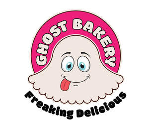

Trade Mark Journal No.2025/044 31 October 2025
UK00004280411 19 October 2025 (29,30,35)

- Class 29
- Cocoa butter for food; Jellies for food, other than confectionery; Cocoa flavored milk beverages; Milk-based beverages flavored with chocolate; Cocoa butter.
- Class 30
- Chocolate for confectionery and bread; Flour confectionery; Chocolate confectionery; Non-medicated flour confectionery coated with chocolate; Sugar confectionery; Chocolate confectionary; Flavoured sugar confectionery; Chocolate flavoured confectionery; Non-medicated flour confectionery containing chocolate; Chocolate confectionery products; Confectionery chocolate products; Chocolate confections; Confectionery items coated with chocolate; Chocolate cakes; Sugar paste for confectionery; Confectionery made of sugar; Fondants [confectionery]; Chocolate confectionery having a praline flavour; Chocolate biscuits; Chocolate marzipan; Confectionery items formed from chocolate; Confectionery; Chocolate sweets; Chocolate coated biscuits; Chocolate pastries; Confectionery chips for baking; Milk chocolate teacakes; Chocolate-coated rice cakes; Chocolate cake; Fruit confectionery; Dairy confectionery; Chocolate fillings for bakery products; Non-medicated confectionery containing chocolate; Chocolate coated marshmallow biscuits containing toffee; Biscuits containing chocolate flavoured ingredients; Chocolate candies; Chocolate desserts; Peanut confectionery; Chocolate decorations for confectionery items; Biscuits having a chocolate flavoured coating; Chocolate beverages with milk; Chocolate flavoured beverages; Shortbread with a chocolate coating; Chocolate; Milk chocolate; Chocolate decorations for cakes; Chocolate flavoured coatings; Chocolate covered cakes; Cake flour; Cocoa-based ingredients for confectionery products; Preparations for making of sugar confectionery; Chocolate caramel wafers; Chocolate covered biscuits; Chocolate wafers; Chocolate coated fruits; Deep chocolate cake made with chocolate sponge; Biscuits having a chocolate coating; Crystallized sugar for decorating cakes; Cocoa beverages with milk; Fruit jellies [confectionery]; Candy coated confections; Aerated drinks [with coffee, cocoa or chocolate base]; Chocolate-based beverages with milk; Prepared desserts [confectionery]; Milk chocolate bars; Chocolate brownies; Chocolate coffee.
- Class 35
- Wholesale services in relation to chocolate.
Mario Ghost Bakery ltd